Розселення етнічних меншин у Закарпатській області
Частка етнічних менших у загальній чисельності
(%)
| 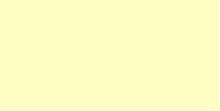 | від 0 до 6 |
| від 6 до 20 | |
| від 20 до 50 | |
| від 50 до 81 |
Населення етнічних меншин
(%)
| 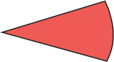 | білоруси |
| 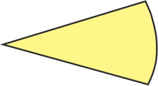 | болгари |
| 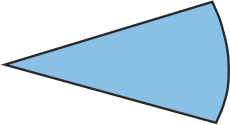 | молдовани |
| 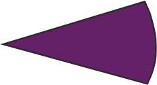 | німці |
| 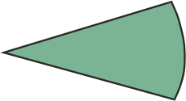 | поляки |
| 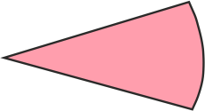 | росіяни |
| 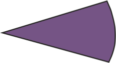 | румуни |
| 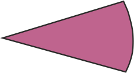 | словаки |
| 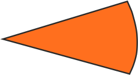 | угорці |
| 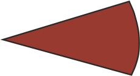 | цигани |
| 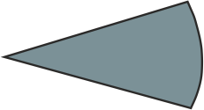 | інші |
Примітка. 1. Інформація подана по результатам перепису 2001 р.
2. Етноси, частка яких становить менше 1% від загальної чисельності населення міст та менше 10% від загальної чисельності населення районів, на карті не відображені.